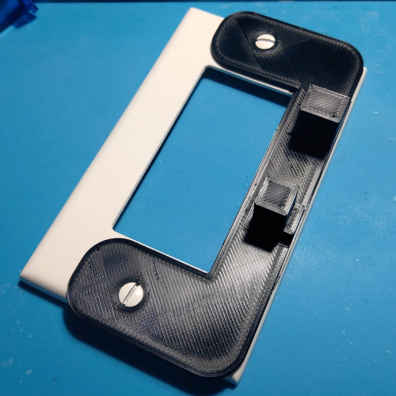
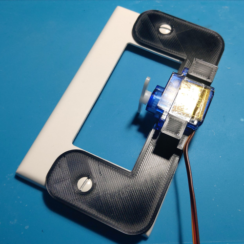

This is my Light Switch Bot/Mount
because i sleep on the top bunk of my bed

because i sleep on the top bunk of my bed
3D printed, Servo actuated, Raspberry Pi webserver, Discord API Integration.
I wanted to create a device that can manually click the rocker switch of my room light on and off. I did not want to have to mess with any of the electrical circuits of the light switch system underneath the cover.
The bracket I designed for the servo motor was modelled in Fusion360.
After learning much of the basics of CAD software, I was comfortable with modelling the bracket on my own with my own measurements. Alongside the 3D printer I bought myself, I also purchased digital calipers in order to do some real measurements and real prototyping.
Below I have attached the finished bracket mount for the servo. I contemplated if I wanted it in white or black since those were my colors of filament at the time. I settled with black in order to have some contrast (make it panda themed almost)
 If you can see, I created the bracket with the rocker switch in mind, so when the servo is moved, it will either push the rocker switch on or off on command.
The main challenge comes with the servo only having limited degrees of rotation, so I had to cleverly offest the servo arm 90° in order to turn the servo within its limited range, enough to hit either side of the rocker switch.
Messing with my 3D printer settings however, I do want to turn on ironing in order to smooth out the final print. I am planning to include modular connectors in order to cusomize what I can place and store on the light switch bracket. I can potentially use it to add sensors and mounts and swap them out easily as if they were Legos.